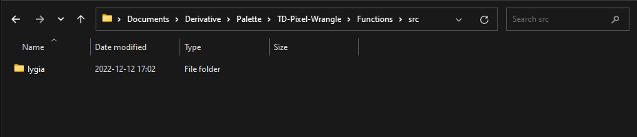

Fonctions
Bibliothèques externes
Introduction
Pixel Wrangle est conçu comme un environnement modulaire. Il est donc possible d'étendre les fonctions disponibles via des bibliothèques GLSL existantes, ou en construisant vos propres bibliothèques en sauvant des fonctionnalités que vous pouvez ensuite rappeler dans tout vos projets. Cela peut-être utile lorsque vous souhaitez réutiliser du code de manière plus granulaire que vous ne pourriez le faire avec des presets. Notez aussi que lorsque vous importez des bibliothèques externes, elles deviennent disponible au travers de tout votre projet, cela veut donc dire que vous pouvez tout à fait référencer ces imports dans un GLSL TOP nu, indépendamment de l'utilisation de Pixel Wrangle
Lygia
Par défaut, Pixel Wrangle fournit une bibliothèque de fonctions granulaires très complète appelée Lygia. Lygia est un projet communautaire porté notamment par Patricio Gonzalez Vivo, qui est aussi à l'origine de https://thebookofshaders.com, un guide d'introduction aux fragment shaders. Pour plus d'informations sur cette bibliothèque et son contenu, vous pouvez aussi consulter le GitHub officiel
Fichiers et dossiers importants
Les fichiers relatifs aux bibliothèques externes sont stockés dans le dossier Functions à la racine du projet Pixel Wrangle. Pour ajouter une bibliothèque externe de votre choix, vous pouvez cloner son contenu dans le dossier Functions/src/<Nom de la bibliothèque>

Dans les sections suivantes, vous verrez comment intégrer ces bibliothèques dans vos projets. Je précise également que pour que la bibliothèque soit lisible par Pixel Wrangle, les fichiers doivent avoir une extension en '.glsl', tout autre type de fichier sera ignoré.
Auto-parsing
Pixel Wrangle fournit un outil de parsing sommaire qui permet de rendre compatible des libraries écrites en GLSL pur, en GLSL compatible avec l'écosystème Touchdesigner.
Cela concerne en premier lieu la forme des chemins d'imports qui sont spécifiques à Touchdesigner, mais aussi la conversion de certains noms de fonction comme texture2D(), et autres afin que la librairie s'exécute correctement dans l'environnement Touchdesigner.
Le principe est le suivant :
- Vous déposez vos dossiers de bibliothèques brutes dans le dossier Functions/src comme décrit précédemment
- Vous parsez vos bibliothèques directement depuis l'interface de Pixel Wrangle (Pressez juste 'Build Libraries' depuis la page 'Code/Plugin')
- Une fois les bibliothèques parsées, une copie compatible avec Touchdesigner de l'architecture des fichiers / dossiers est effectuée automatiquement dans le dossier 'Functions/dist'
Import des bibliothèques dans le projet
Pour importer les bibliothèques dans votre projet, il vous suffit de presser 'Import Libraries' depuis la page 'Code/Plugin'. Cela créera toute l'architecture de fichiers/dossiers à la racine de votre projet Touchdesigner, dans un BaseCOMP appelé 'libs'. Chaque import en ''.glsl' est en fait un TextDAT en mode Sync File, qui pointe vers le fichier correspondant du dossier Functions/dist (la copie du fichier après parsing)
Du fait que l'architecture des librairies soit intégrée à la racine de votre projet, vous pouvez tout à fait réutiliser toutes les fonctions dans un contexte de GLSL TOP sans passer par l'enveloppe de Pixel Wrangle.
Inclure des fonctions dans votre instance Pixel Wrangle
En pressant le raccourci [CTRL] + [SHIFT] + [TAB], ou en cliquant dans la barre de recherche en bas à droite de l'interface, vous accédez à l'explorateur de fonctions. Cet explorateur renvoie la liste de toutes les fonctions disponibles au sein de votre projet. Vous pouvez ensuite effectuer une recherche en tapant un mot-clé, la liste est filtrée automatiquement.
Pixel Wrangle vous proposera également la documentation d'en-tête de toutes vos fonctions, ainsi que toutes les signatures que vous pouvez copier coller directement dans votre code.
Enfin, vous pouvez double-cliquer sur la fonction dans la liste, cela l'importera dans votre instance Pixel Wrangle. Vous pouvez voir l'inclusion apparaître dans votre panneau 'Fonctions'
Ajouter vos propres fonctions
Si vous souhaitez ajouter de nouvelles fonctions au fur et à mesure de votre utilisation de Pixel Wrangle, vous pouvez le faire via la fonction '+' dans le panneau des Fonctions. Il vous sera alors demandé le nom du fichier à sauvegarder ainsi qu'un commentaire en tête de fichier afin de donner des informations utiles sur le rôle de ce fichier et de ses fonctions. Par défaut, ces presets sont sauvés à la racine de votre dossier Functions/user dans un fichier au format '.glsl'. Vous pouvez ensuite les placer dans les dossiers de votre choix et définir la hiérarchie de votre choix dans votre
Organiser vos fonctions en une librairie utile
Il n'y a pas de méthode particulière pour créer vos propres bibliothèques de fonctions GLSL, cependant quelques recommandations : - Il est préférable d'éviter de créer des dépendances à des fonctions d'autres bibliothèques afin de préserver la portabilité de votre bibliothèque dans différents contextes - Tant que possible, essayer d'organiser vos fichiers de fonctions de manière granulaire et d'adopter une hiérarchie par utilité / contexte pour plus de clarté - Hormis pour faire de la surcharge de fonctions, déclarer des variantes de signatures d'une même fonction, il est conseillé de n'avoir qu'une seule fonctionnalité par fichier -